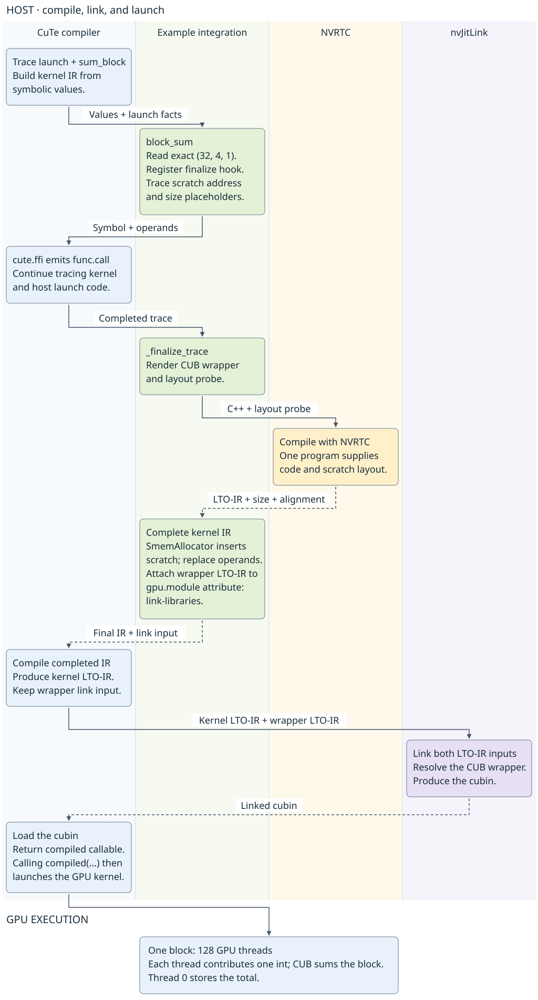

Agents
For a more token-efficient view of this page, read the raw documentation source. Follow its includes and API references for code examples and docstrings.
Minimal CuTe DSL Integration Example#
cuda.coop.cutlass integrates with the CUTLASS CuTe DSL through a handful
of mechanisms that are easy to lose among planners, thread groups, payloads,
and caches. This page isolates them. One script,
cutlass_integration_example.py on GitHub,
calls cub::BlockReduce from a CuTe kernel using only the DSL’s own
interfaces, NVRTC, and the CCCL headers. It imports nothing from
cuda.coop.cutlass.
The intended readers are CUTLASS developers reviewing whether this is how
the DSL is meant to be extended, and cuda.coop.cutlass developers who
want the mechanisms without the abstractions. The section “Questions for
CUTLASS reviewers” lists the questions we would like them to answer.
Introduction to CUTLASS for cuda.coop.cutlass Developers explains the DSL’s tracing model that the script
builds on.
Run it on Linux from a CCCL checkout with a compatible CUTLASS 4.9 CuTe DSL,
CUDA 13 driver and toolkit, cuda-bindings, and NumPy. The DSL must expose
launch facts and trace-finalization hooks. See cuda.coop.cutlass: Cooperative Primitives for CuTe Kernels for installation
and Compiler requirements for the required interfaces.
With those prerequisites available:
python docs/python/coop_cutlass/cutlass_integration_example.py
# block sum verified: 3008
CUDA_COOP_CUTLASS_EXAMPLE_PRINT_IR=1 python docs/python/coop_cutlass/cutlass_integration_example.py
The second command prints the finalized MLIR module from inside the hook.
CUDA_COOP_CUTLASS_CCCL_ROOT selects another CCCL checkout for the headers.
CUDA_COOP_CUTLASS_EXAMPLE_ARTIFACT_DIR selects an existing parent directory
for the example’s temporary LTO-IR files. They are removed when the process
exits. The package’s persistent cache is configured separately with
CUDA_COOP_CUTLASS_PROVIDER_CACHE_DIR. See Configuration.
Compilation and execution#
cute.compile drives the host-side steps below. The trace-finalize hook
supplies the CUB wrapper and completes the kernel’s scratch operands before
CuTe links the two LTO-IR inputs. Calling the returned callable then launches
the GPU kernel.


Columns show ownership. Arrows show the data passed between components. On narrow screens, scroll horizontally to follow all four columns.#
What the script uses from the DSL#
Interface |
Status |
Purpose |
|---|---|---|
|
public |
Write, compile, and launch the kernel. |
|
public |
Emit a call to a symbol defined later. |
|
public |
Allocate CUB scratch in shared memory. |
|
private |
Read the exact block shape while tracing the body. |
|
private |
Run after tracing, before the module hash and device link. |
|
internal |
Hand the compiled LTO-IR to the device link. |
|
internal |
Trace placeholders, insert the allocation, replace operands. |
|
internal |
Select the NVRTC target from the DSL’s own setting. |
The kernel#
The kernel sums one int per thread across a (32, 4, 1) block and
thread zero stores the total. block_sum is the integration. Everything
else is ordinary CuTe.
@cute.kernel
def sum_block(source: cute.Pointer, destination: cute.Pointer):
tidx, tidy, _ = cute.arch.thread_idx()
rank = tidx + tidy * _BLOCK[0]
inputs = cute.make_tensor(source, cute.make_layout(_THREADS))
output = cute.make_tensor(destination, cute.make_layout(1))
total = block_sum(inputs[rank]) # 1. Traced like any other CuTe call.
if rank == 0:
output[0] = total
@cute.jit
def launch(source: cute.Pointer, destination: cute.Pointer):
sum_block(source, destination).launch(grid=1, block=_BLOCK)
Steps 1 to 3: the trace-time entry point#
The DSL compiles by executing the kernel body with symbolic values, so
block_sum runs while CuTe traces sum_block. It reads the launch
shape, registers the finalize hook, traces two placeholder constants for
the scratch, and emits the call:
def block_sum(value: cutlass.Int32) -> cutlass.Int32:
"""Emit a call to a CUB block sum while CuTe traces the kernel.
``value`` wraps an MLIR value of the kernel body. The returned ``Int32``
wraps the call result, which ``cub::BlockReduce::Sum`` defines only in
thread zero.
"""
# 2. Exact launch facts. ``.launch(grid=..., block=...)`` attaches them to
# the kernel operation before tracing its body, so the block shape is
# a Python tuple here. An upper bound such as maxntid would not do.
facts = cute._get_launch_facts()
if facts.exact_block_dim is None:
raise RuntimeError("block_sum requires a static block shape")
request = _Request(facts.exact_block_dim)
_requests[request.symbol] = request
# 4. Make sure the finalize hook runs for this trace. Registering the
# same callable twice is a no-op.
CuTeDSL._get_dsl().register_trace_finalize_hook(_finalize_trace)
# 5. Scratch placeholders. The C++ layout is unknown until NVRTC runs,
# so trace two i32 constants and remember them with their kernel.
smem_addr = arith.constant(T.i32(), 0)
smem_bytes = arith.constant(T.i32(), 0)
_scratch_uses.append(
_ScratchUse(request, _enclosing_kernel(), smem_addr, smem_bytes)
)
# 3. Declare a private prototype in the gpu.module and emit func.call.
# No definition exists yet. The device linker resolves it later.
result = cute.ffi(
name=request.symbol,
params_types=[cutlass.Int32, cutlass.Uint32, cutlass.Int32],
return_type=cutlass.Int32,
)(value, cutlass.Uint32(smem_addr), cutlass.Int32(smem_bytes))
return cutlass.Int32(result)
def _enclosing_kernel() -> ir.Operation:
"""Walk from the insertion point to the kernel that owns the scratch."""
op = ir.InsertionPoint.current.block.owner
while op is not None:
operation = getattr(op, "operation", op)
if operation.name == "cuda.kernel" or (
operation.name == "lir.func"
and "gpu.kernel" in operation.attributes
):
return operation
op = operation.parent
raise RuntimeError("block_sum must be called inside a @cute.kernel body")
Three details matter here.
The block shape is exact. KernelLauncher.launch attaches a
cutlass_launch_facts attribute to the kernel operation before it traces
the body, so _get_launch_facts().exact_block_dim is (32, 4, 1) as
Python integers. CUB’s BlockReduce is a template on those dimensions,
and a mismatch between the template and the launch would be silent
corruption. The DSL also derives nvvm.reqntid from the same
configuration.
The call is a plain func.call. cute.ffi declares a private
func.func prototype in the enclosing gpu.module on first use and
emits the call. The symbol is used verbatim, so the C++ definition is
extern "C". DSL numerics wrap MLIR values. cutlass.Int32(result)
wraps the call’s result for the caller.
The scratch operands are placeholders. Nothing in Python knows
sizeof(BlockReduce::TempStorage) yet. The entry point traces two
arith.constant 0 : i32 values, passes them as the address and size, and
records them with the enclosing kernel operation for later replacement.
Step 4: the trace-finalize hook#
After the kernel body and the host function have returned, CuTe calls each
registered hook with the DSL, the finished module, and the function name.
A @cute.jit call that uses CuTe’s compile cache computes the module
hash and looks it up after the hooks. cute.compile, which the script
uses, turns that cache off. When CuTe compiles the module, the device
link comes after the hooks in both cases, so the hook can still complete
the module:
def _finalize_trace(dsl, module: ir.Module, function_name: str) -> None:
"""Compile requests and complete the module before CuTe hashes it.
CuTe calls every registered hook once per trace, after the Python body
returns and before the module hash, the compile-cache lookup, and the
device link. Everything emitted during tracing is visible here and can
still be changed.
"""
del function_name
requests, uses = list(_requests.values()), list(_scratch_uses)
_requests.clear()
_scratch_uses.clear()
if not requests:
return # A trace without block_sum calls needs nothing from us.
source = _PREAMBLE + "".join(
_WRAPPER.format(symbol=r.symbol, cpp_type=r.cpp_type) for r in requests
)
# The DSL already knows the target, for example "sm_120a".
arch = "compute_" + dsl.envar.arch.removeprefix("sm_")
ltoir, layouts = _compile_ltoir(source, arch, [r.probe for r in requests])
digest = hashlib.sha256(ltoir).hexdigest()[:16]
path = os.path.join(_ARTIFACTS.name, f"{digest}.ltoir")
Path(path).write_bytes(ltoir)
_allocate_scratch(uses, {r.symbol: layouts[r.probe] for r in requests})
_attach_link_library(module, path)
if os.environ.get("CUDA_COOP_CUTLASS_EXAMPLE_PRINT_IR"):
print(module)
def _attach_link_library(module: ir.Module, path: str) -> None:
"""Name the LTO-IR file on every gpu.module.
CuTe merges the attribute into its ``link-libraries`` compile option and
passes the files to the device linker with the kernel's own LTO-IR.
"""
# CuTe generally emits one gpu.module containing all kernels in a trace.
# Visit every GPU module, as CuTe's link-library collection does.
for op in module.body.operations:
if op.name != "gpu.module":
continue
paths = {path}
if "link-libraries" in op.attributes:
paths.update(attr.value for attr in op.attributes["link-libraries"])
op.attributes["link-libraries"] = ir.ArrayAttr.get(
[ir.StringAttr.get(item) for item in sorted(paths)]
)
The hook renders the C++ for every distinct block shape it saw, compiles it,
allocates scratch, and names the LTO-IR file on the gpu.module. CuTe
merges that attribute into its link-libraries compile option and passes
the file to nvJitLink together with the kernel’s own LTO-IR. The DSL
documents the attribute in terms of LLVM bitcode. Its compiler accepts the
NVRTC LTO-IR container as a link input, and the link inlines the wrapper.
The generated C++ contains a wrapper function and a layout-probe template.
The wrapper uses __cvta_shared_to_generic to convert the 32-bit
shared-window address into a generic pointer while retaining the compiler’s
knowledge that it points to shared memory. It constructs the CUB object on
that storage and ends with the barrier that makes the scratch reusable.
The probe template is explained with step 5:
_PREAMBLE = f"""\
#include <cub/block/block_reduce.cuh>
// Layout probe (step 5). NVRTC evaluates the template arguments while it
// compiles the wrappers, and nvrtcGetLoweredName returns the mangled
// instantiation, which spells sizeof and alignof as decimal integers.
template <unsigned long long Size, unsigned long long Alignment>
__device__ unsigned char {_PROBE} = 0;
"""
_WRAPPER = """\
extern "C" __device__ int {symbol}(int value, unsigned int smem_addr,
int smem_bytes) {{
using reduce_t = {cpp_type};
using storage_t = typename reduce_t::TempStorage;
if (smem_bytes < (int) sizeof(storage_t) ||
(smem_addr & (alignof(storage_t) - 1)) != 0) {{
asm volatile("trap;");
}}
// CuTe passes a 32-bit shared-window address. CUB wants a generic pointer.
auto* const generic_addr = __cvta_shared_to_generic(smem_addr);
auto& storage = *reinterpret_cast<storage_t*>(generic_addr);
int result = reduce_t(storage).Sum(value);
__syncthreads(); // The scratch may be reused by a later call.
return result;
}}
"""
NVRTC compiles the translation unit as relocatable device code with
-dlto. The same program answers the layout query:
def _compile_ltoir(
source: str, arch: str, probes: list[str]
) -> tuple[bytes, dict[str, tuple[int, int]]]:
"""Compile the wrappers to LTO-IR and read back the probed layouts.
Relocatable device code with ``-dlto`` yields an LTO-IR container, the
input kind CuTe's device link already consumes for the kernel itself, so
the linker can inline the wrapper into the kernel.
"""
program = _check(
nvrtc.nvrtcCreateProgram(source.encode(), b"wrappers.cu", 0, [], [])
)
try:
for probe in probes:
_check(nvrtc.nvrtcAddNameExpression(program, probe.encode()))
options = [
b"--std=c++17",
b"--relocatable-device-code=true",
b"-dlto",
f"--gpu-architecture={arch}".encode(),
*(f"--include-path={path}".encode() for path in _include_dirs()),
]
if nvrtc.nvrtcCompileProgram(program, len(options), options)[0]:
log = bytearray(_check(nvrtc.nvrtcGetProgramLogSize(program)))
_check(nvrtc.nvrtcGetProgramLog(program, log))
raise RuntimeError(f"NVRTC failed:\n{log.decode(errors='replace')}")
layouts = {}
for probe in probes:
lowered = _check(nvrtc.nvrtcGetLoweredName(program, probe.encode()))
# For example _Z20example_layout_probeILy24ELy4EE -> (24, 4).
match = re.search(r"ILy(\d+)ELy(\d+)EE", str(lowered))
layouts[probe] = (int(match.group(1)), int(match.group(2)))
blob = bytearray(_check(nvrtc.nvrtcGetLTOIRSize(program)))
_check(nvrtc.nvrtcGetLTOIR(program, blob))
return bytes(blob), layouts
finally:
nvrtc.nvrtcDestroyProgram(program)
def _include_dirs() -> list[str]:
"""Select this checkout's CCCL headers, then the CUDA runtime headers."""
root = Path(
os.environ.get("CUDA_COOP_CUTLASS_CCCL_ROOT")
or Path(__file__).resolve().parents[3]
)
if not (root / "cub" / "cub" / "version.cuh").is_file():
raise RuntimeError(
f"{root} is not a CCCL checkout; set CUDA_COOP_CUTLASS_CCCL_ROOT"
)
from cuda.pathfinder import find_nvidia_header_directory
cuda_include = find_nvidia_header_directory("cudart")
if cuda_include is None:
raise RuntimeError("CUDA runtime headers not found; set CUDA_HOME")
return [
str(root / "cub"),
str(root / "thrust"),
str(root / "libcudacxx" / "include"),
str(cuda_include),
]
The finalized module#
This excerpt is the module printed by
CUDA_COOP_CUTLASS_EXAMPLE_PRINT_IR=1 with CuTe DSL 4.9.0.dev1 for
sm_120a, trimmed to the lines the integration produced or depends on.
Names and attributes vary between DSL versions.
gpu.module @kernels attributes {"link-libraries" = [".../9925411900700bac.ltoir"]} {
lir.func public @kernel_cutlass_sum_block_...(%arg0: !cute.ptr<i32, gmem, align<16>>, ...)
attributes {cutlass_launch_facts = {exact_block_dim = array<i64: 32, 4, 1>,
exact_grid_dim = array<i64: 1, 1, 1>, ...},
gpu.kernel, nvvm.reqntid = array<i32: 32, 4, 1>, ...} {
// Inserted by the hook at the entry block: 24 bytes, 4-byte alignment.
%smem = cute.memref.alloca() {smem.partition_id = 1 : i32} : !memref_smem_i8
%iter_0 = cute.get_iter(%smem) : !memref_smem_i8
%0 = builtin.unrealized_conversion_cast %iter_0 : !cute.ptr<i8, smem, align<4>> to !llvm.ptr<3>
%1 = llvm.ptrtoint %0 : !llvm.ptr<3> to i32
%c24_i32 = arith.constant 24 : i32
...
%7 = cute.memref.load(%view, %coord) : (!memref_gmem_i32, !cute.coord<"?">) -> i32
// The traced placeholders, now unused.
%c0_i32 = arith.constant 0 : i32
%c0_i32_8 = arith.constant 0 : i32
// The call now carries the real address and size.
%8 = func.call @example_block_sum_i32_32x4x1(%7, %1, %c24_i32) : (i32, i32, i32) -> i32
...
}
func.func private @example_block_sum_i32_32x4x1(i32, i32, i32) -> i32
}
func.func @cutlass_launch_Ptrgmem_Ptrgmem(...) attributes {llvm.emit_c_interface} {
%0 = cute.kernel_smem_size @kernels::@kernel_cutlass_sum_block_... : i64
...
%3 = cuda.launch_cfg.create<...> (blockDim = (%c32_i32, %c4_i32, %c1_i32),
dynamicSmemBytes = %0, gridDim = (...), ...)
%4 = cuda.launch_ex @kernels::@kernel_cutlass_sum_block_...<%3> (%arg0, %arg1) ...
}
The linked cubin#
Running the script with CUTE_DSL_KEEP=cubin and CUTE_DSL_DUMP_DIR
set keeps the final cubin. On the same machine, cuobjdump --dump-sass
shows that the device link inlined the wrapper. The listing contains no
CALL and no example_block_sum symbol. It has one REDUX.SUM for
the warp reductions and two BAR.SYNC: one inside CUB and one from the
wrapper’s trailing __syncthreads(). Scratch accesses use LDS/STS
and global input/output accesses use LDG/STG. There are no generic
LD/ST instructions. The ELF symbol table still contains
_Z20example_layout_probeILy24ELy4EE as a weak one-byte device object:
the probe instantiation survives the link. cuda.coop.cutlass’s runtime
tests run cuobjdump on the cubin of each primitive family and fail if a
wrapper symbol remains. Some also reject CALL. The others allow it,
because a kernel can keep calls within its own control flow and to the
compiler’s synchronization and shuffle helpers after the wrappers are
inlined.
What the package adds beyond this#
The script keeps one global request list and one scratch allocation per
call. cuda.coop.cutlass keeps the same five mechanisms and adds the
bookkeeping a library needs:
Sessions per trace.
BundleSessionis keyed by the DSL’s compile options object and the MLIR module, so each trace that builds its own module has its own session, including nested and repeated compilations. Kernels and nested@cute.jitcalls traced into one module share one session, and scratch is planned and allocated for each kernel. A snapshot restores the queued requests if a lowering fails part way.Planning. A planner selects the CUB specialization, participation rules, result ownership, and scratch requirements from the group, dtype, controls, and launch facts. The lowering derives a deterministic symbol name from that plan. Equivalent requests share one wrapper.
Scratch policy.
TempStoragedescriptors let several calls share one allocation or receive exclusive slices, with explicit or automatic reuse barriers, typed reservations, and a lifetime check across branches and loops. Warp primitives size one storage instance per logical warp. When a launch passessmem=, the package’s hook raises that operand to at leastcute.kernel_smem_sizeafter it inserts the deferred scratch.Array results. Load returns several values per thread through a
cute.make_rmem_tensorbuffer whose pointer is an extra argument. Store passes each item as a scalar argument.Artifacts. The LTO-IR is cached on disk under a key that includes the rendered source, header identity, compiler options, and architecture. A cache hit skips NVRTC and still supplies the recorded layouts.
Toolkit binding. The NVRTC and nvJitLink libraries are preloaded from the toolkit that owns the selected headers, and both versions are checked before compilation.
Convergent calls. The script leaves each call as the
func.callthatcute.ffiemits. The package’s hook replaces each wrapper’sfunc.funcprototype andfunc.callwithllvm.funcandllvm.calloperations markedconvergent. Optimization then keeps one call for all participating threads when the kernel branches on the same condition before and after it.
Questions for CUTLASS reviewers#
Is
register_trace_finalize_hooktogether with thegpu.modulelink-librariesattribute the intended extension point for externally compiled device code? The DSL documentscute.ffi(source=BitCode(...))as taking LLVM bitcode. Is an NVRTC LTO-IR container also a supported link input, and will it remain one?cute._get_launch_facts()is private. Is reading exact block, grid, and cluster shapes from thecutlass_launch_factsattribute the right contract, and will its schema remain versioned?The hook mutates the finished module: it inserts
SmemAllocatorallocations at the kernel entry block and callsreplace_all_uses_withon traced placeholders. The package’s hook also raises the shared-memory operand of a launch that passedsmem=. Is this acceptable, or is there a preferred way to request shared memory whose size is only known after an external compilation?The hook constructs
SmemAllocatorand callsallocateafter the user’s trace has finished. Both aredsl_user_opmethods. Does that interact badly with the user’s own allocations, partitions, or thesmem.hint_smem_base_uniformattribute?The wrappers contain
__syncthreads()and are inlined by the device link.cute.ffiemits an ordinaryfunc.funcprototype andfunc.call. The package’s hook replaces both withllvm.funcandllvm.calloperations markedconvergent, so that optimization keeps the participating threads at the same barrier. Shouldcute.ffimark the prototype and the callconvergentitself? Should they carry other attributes as well, such asnoinline? Iscute.ffi(inline=False)the way to ask fornoinline?The probe template leaves a weak one-byte
__device__symbol in the cubin. Is there a cleaner way to obtainsizeofandalignoffrom an NVRTC compilation that CuTe will consume?Are there constraints on the NVRTC version that produces the LTO-IR relative to the LLVM and nvJitLink used by the DSL? The package loads NVRTC and nvJitLink from the toolkit that supplies the CUDA runtime headers. It requires NVRTC to match the header version and nvJitLink to have the same major version and be no older. The compatibility rule itself is not documented.
Testing#
tests/runtime/test_cutlass_integration_example.py runs the script in a
subprocess with an isolated interpreter, checks the printed verification
line, and asserts that cuda.coop.cutlass was never imported:
python -m pytest -q python/cuda_coop_cutlass/tests/runtime/test_cutlass_integration_example.py